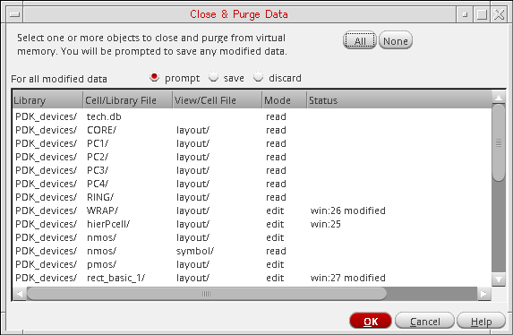

5
Working with Cellviews
You work with cellviews in a
For information about working with cellviews, see the following sections:
- Opening a Cellview
- Setting the Default Application for a Cellview
- Closing a Cellview on a Tab in a Session Window
- Closing All but the Cellview on the Current Tab
- Saving Modified Data
- Closing All Cellviews
- Specifying the Default Instance Prefix
Opening a Cellview
To open a cellview from the Command Interpreter Window (CIW) or your
-
Choose File – Open.Alternatively, if you have a tab on display in your session window, right-click over the tab and select Open from the displayed pop-up menu to display the form.The Open File form appears.
When you choose File – Open in your session window, or select Open from the tab pop-up menu, additional radio buttons appear near the bottom of the form so that you can choose whether to open the cellview on a new tab, on the current tab, or in a new session window (see step 5). -
In the File group box, do the following:
-
In the Library drop-down combo box, select a library.
Cell names from the selected library appear in the Cells list box. -
Select a cell name from the Cells list or directly type the cell name in the Cell field.
Once the cell name is entered in the Cell field, the views available for that cell will appear in the View drop-down combo box. -
In the View drop-down combo box, select a view name.If a thumbnail of the selected cellview is available, this will be displayed in the Open File form as an aid to selection. If no thumbnail is available, the space will be blank (for more information on thumbnails, see Thumbnail Images of Cellviews in the Cadence Library Manager User Guide.Alternatively, you can click Browse to open the Library Browser – Open File window and select your design.
-
In the Library drop-down combo box, select a library.
-
In the Application group box, select an item from the Open with drop-down combo box. For example:
The choices you can make depend on the application levels you have licensed at your site. See also “Using Different Application Tiers”.
- (Optional) Mark the Always use this application for this type of file check box if you want the program to use the selected application when opening a view that is the same file type as what you specified in the View field.
-
Select one of the Open for radio buttons: edit or read.
To open the file in edit mode, you must have write permission to the file.
See als Setting Default Cellview Open Mode. -
(Optional) If you chose File – Open in a session window, you can select one of the Open in radio buttons to indicate how you want the program to open the cellview:
- new tab opens the cellview on a new tab in your current session window.
- current tab opens the cellview on the current tab in your current session window.
- new window opens the cellview in a new session window.
-
Click OK.
The cellview appears in the specified application design window according to your selections. If the appropriate application design window is not already open, the software starts the application.
You can use the following variable to set the stoplevel of the thumbnail in the cellview window.
ui.thumbnails stopLevel 'int -1
If you set any value, which is >=0, then that value will be used instead of the system default value, 0 during thumbnailing.
Enabling Design Preview
If multiple designs are open, place the mouse pointer on a tab to preview the design open in that tab, as shown below:

To enable this feature, you need to add the following variable in the .cdsenv file:
ui imageTabTip boolean t
Setting Default Cellview Open Mode
You can specify the default mode, edit or read, for opening cellviews in the Open File form using the deOpenFormAccessModeAlwaysRead environment variable in your .cdsenv file.
designEditor.fileSpec deOpenFormAccessModeAlwaysRead boolean nil nil
Here, if deOpenFormAccessModeAlwaysRead is set to t, the Open for option, in the Open File form, will always be set to read irrespective if a cellview is writable or not.
You can set the following environment variable in your .cdsenv file to define your preference in opening a cellview in a new tab, the current tab, or a new window. The default option is a new tab.
designEditor.fileSpec deDefaultWindowStyle
The Open File form, accessed from the File — Open option of Cadence applications like Schematic Editor, displays the Open In options based on how you have set designEditor.fileSpec in your .cdsenv file.
The following figure illustrates in the Open for and Open in options on the Open File form.
Controlling the Fit-on-Open Feature
You can specify the number of attempts made to open a window at a certain zoom level for a graphics Window in Virtuoso. Valid values are any integer number greater than or equal 0. You can set this number based on your working environment.
designEditor.window fitViewAttempts int number_of_attempts
Setting the value to 0 (zero) disables the fit-on-open feature.
Cellview Already in Use
If you attempt to open a cellview that is already being used (that is, the cellview file is locked by another user), a warning message will be displayed informing you of the current user of the cellview and the current host machine name.
From here you can choose to either open the cellview as read-only or not to open the cellview.

Indication of Modified Cellviews
Design Editor title bar indicates if a cellview has been modified, but not saved. It uses asterisk (*) as the default indicator at the end of the cellview name in the title bar to indicate a modified cellview.
You can change the default indicator using the environment variable cellviewModifiedIndicator. Design Editor reads this environment variable once and uses the indicator value throughout a DFII session. If the environment variable is modified during a session, a warning message is issued once. For details, see “Customizing Titles for Windows and Icons”.
Cellview History
Virtuoso Design Environment maintains the history of cellviews you access. Using this history, the environment displays a list of cellviews you access in the CIW File menu. You can open a recently accessed cellview directly from the File menu.
Virtuoso Design Environment does not consider the application tier that was used to open the cellview previously. For example, open a cellview in Layout EXL and close it. The CIW File menu should now include an entry to access this cellview. Open the cellview from the CIW File menu. The cellview opens in Layout XL and not Layout EXL.
Using the environment variable ignoreAppTierInHistory, you can control whether Virtuoso Design Environment must consider the application tier recorded in the history for opening a cellview. If you want to ensure the application tier is considered, set this environment variable in your .cdsenv file as nil. By default, this variable is set to t. For example:
designEditor.history ignoreAppTierInHistory boolean t
This means that application tier saved in history is ignored when an item is selected from the history menu. In ICADVM20.1, Layout XL is used to open a layout cellview by default.
Filtering Unavailable Tiers when Opening a Cellview
When a cellview is saved in Virtuoso, information about its contents is saved in the property bag, which is the data.dm file. When the cellview is reopened from the Open File form, information in the property bag is read to determine the application tiers that support the data contained in the cellview. Based on this information, only supported tiers are displayed in the Open File form.
For example, consider that you have a layout cellview and you create a virtual hierarchy in it. You need Layout EXL to open this cellview because it is not supported in Layout XL. The information that cellview uses virtual hierarchy is saved in its data.dm file. So, next time when you open this cellview, you will see that only Layout Viewer and Layout EXL are the available choices to open the cellview and Layout XL is not available.
Setting the Default Application for a Cellview
You can set the default application for a schematic, symbol, or layout cellview. See
- Setting the Default Application for a Schematic or Symbol Cellview
- Setting the Default Application for a Layout Cellview
Setting the Default Application for a Schematic or Symbol Cellview
To set the default application for a schematic or symbol cellview, do the following:
-
In the session window, choose File – Set Default Application.
The Set Default Schematic Application form appears.
- For Choose Schematic/Symbol Level, select one of the following application levels:
-
Click OK.
The program uses the application level you selected the next time you open a cellview and writes the environment setting to your.cdsenvfile.
Setting the Default Application for a Layout Cellview
To set the default application for a layout cellview, do the following:
-
In the session window, choose File – Set Default Application.
The Set Default Application form appears.
- In the Set default application for current cellview to drop-down combo box, select a default application to use when opening the current cellview.
-
(Optional) In the Set default application for all layout cellviews to drop-down combo box, select a default application to use when opening any schematic cellview.
-
Click OK.
The program uses the selected application when opening the designated cellview type.
Closing a Cellview on a Tab in a Session Window
To close a cellview on a tab in a session window that has more than one tab, do the following:
Alternatively, do the following:
- Select the tab you want to close.
-
Do one of the following:
- Choose File – Close.
- Choose Window – Tabs – Close Current Tab.
-
Click the X button on the right side of the tab.

If you have any unsaved changes for that cellview, the Save Changes dialog box is displayed.

Closing All but the Cellview on the Current Tab
To close all cellviews except the one on the current tab (in a
-
Right-click the tab for the cellview you want to keep open.
A pop-up menu appears. -
Choose Close Other Tabs.
Cellviews on all other tabs are closed leaving only the current cellview open in your session window.
Alternatively, do the following:
- Select the tab for the cellview you want to keep open.
-
Choose Window – Tabs – Close Other Tabs.
Cellviews on all other tabs are closed leaving only the current cellview open in your session window.
Copying the Current Cellview to a New Session Window
To copy the current cellview on the current tab to a new session window, do the following:
-
Choose Window – Copy Window.
The current cellview on the current tab appears in a new session window. The program preserves your application level and workspace configuration (same set of assistant panes) in the new session window.
However, the Copy Window option is disabled in case the Pcell IDE assistant is opened in the layout window. This is because only one Pcell IDE session is supported at a time.
Saving Modified Data
You can save all currently open and modified cellviews and data using the Save Modified Data form. The form checks for five types of data - cellviews, physical configuration, constraints, property bag (data.dm), and technology files (tech.db). The form lets you save this data from the virtual memory.
To save all open and modified cellviews:
-
In the CIW, choose File – Save Data.
The Save Modified Data form appears.
- Specify the data to save as follows:
- Click OK.
All modified cellviews are saved but stay open for any further editing.
Related links
Closing All Cellviews
You can close all open data using the Close and Purge Data form. The form checks for five types of data - cellviews, physical configuration, constraints, property bag (data.dm), and technology files (tech.db).
This form can display data that have lost connection to their physical files due to one of these reasons:
- A network failure, due to which data on the shared file servers becomes inaccessible
- Deletion of local data
- Renaming of local data
The form lets you purge such data from the virtual memory. It displays relevant warnings in CIW.
Instead of closing each cellview individually, you can close all cellviews at once as follows:
-
In the CIW, choose File – Close Data.
The Close and Purge Data Form appears.

If you do not have any cellviews open, the No Objects to Close prompt appears.

- Choose how Virtuoso handles modified data on File – Close Data selection:
- On the Close and Purge Data form, do one of the following:
-
Click OK.
If you have modified a cellview, the Save Cellview? prompt appears.
- To save the edits before closing and purging, click Yes.
- To discard the edits before closing and purging, click No.
The cellviews you selected are closed and their data purged from virtual memory.
Specifying the Default Instance Prefix
When you place an instance, the default alphabetic character prefix is I for instances and M for mosaic instances (an array of instances). You can change these default values by placing a property on the master cellview or setting a variable in your .cdsenv file.
If you do not specify an instance name explicitly, the program checks the master cellview for the presence of the appropriate property as follows:
When you place the instance, the program does the following:
- Uses the prefix specified by the appropriate master cellview property, if it exists. Otherwise,
-
Uses the prefix specified by the
cdbavariable in your.cdsenvfile. For example:cdba dbInstNamePrefix string "I" cdba dbArrayInstNamePrefix string "M"
Changing the Prefix Using a Property
To change the default prefix by adding a property to the master cellview, do the following:
- Open the desired layout master cellview.
-
Select File – Properties.
The Edit Cellview Properties form appears.

- Select Property.
-
Click Add.
The Add Property form appears.
String appears as the default Type. - In the Name field, type the property name:
- In the Value field, type the prefix you want the program to use when you place an instance.
-
Click OK.
The property name and value appear on the Edit Cellview Properties form. -
Click OK.
The program applies the property to the master cellview.
Changing the Prefix Using an Environment Setting
To change the default prefix using an environment setting, do the following:
-
Copy the default
.cdsenvfile from thesamplesdirectory (see “Copying and Editing the Default .cdsenv File”). -
Change the following line or lines (depending on which prefix or prefixes you want to change) to your custom
.cdsenvfile:cdba dbInstNamePrefix string "
TheyourCustomInstNamePrefix" cdba dbArrayInstNamePrefix string "yourCustomArrayInstNamePrefix" cdba dbAddCellNameToInstNamePrefix boolean tdbAddCellNameToInstNamePrefixenvironment variable enables you to append the cell name to the instance name prefix. The default value isnil. For example, your instance name prefix isINSand if you set this environment variable totrue, it will generateINS_<cellname>_<number>.
Here, the <cellname> is the cell name and <number> is a uniquely generated number.These settings apply the next time you start the software.
Return to top